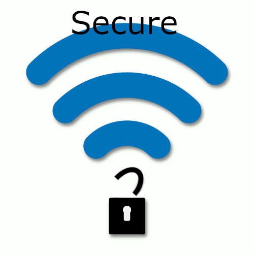

Video montēšana
Teksta apstrāde (Word)
Es apguvu dažādas formatēšanas iespējas, piemēram, teksta noformēšanu, virsrakstus, attēlu ievietošanu un dokumenta strukturēšanu.

Excel
Es iemācījos izmantot dažādas formulas un veidot tabulas, kā arī apstrādāt un sakārtot datus, lai tie būtu pārskatāmi.
.svg.png)
Attēlu apstrāde
Es iemācījos veidot un rediģēt grafiskos attēlus, piemēram, mainīt krāsas, pievienot efektus un izveidot savus dizainus.
3D modelēšana
Es izveidoju 3D kubu ar GIMP veidotu logo uz tā, un pēc tam šo modeli izdrukājām ar 3D printeri.

Galvenie draudi, izmantojot publisku vai nesegtu WiFi
Bez atbilstošiem drošības pasākumiem hakeri var iegūt nesankcionētu piekļuvi jūsu ierīcei un sensitīvai informācijai.
https://redfez.co.uk/2024/06/27/risks-of-using-open-public-wifi-2MITM uzbrukums notiek, kad kibernoziedznieks slepeni pārtver un, iespējams, maina saziņu starp divām pusēm. Visi dati (pieteikšanās dati, e-pasti, kredītkaršu informācija) plūst caur uzbrucēja ierīci.
https://fbisupport.com/risks-insecure-public-wi-fi-networks-mobile-usersHakeri var izveidot viltotus WiFi tīklus, kas izskatās kā īsti, un pēc pieslēgšanās var uzraudzīt visas darbības.
https://www.laventino.com/public-wifi-connection-poses-a-security-riskPrivātums un datu noplūde
Publiskie WiFi pakalpojumi var izsekot lietotāju darbības un pārdot datus reklāmdevējiem.
https://mailsafi.com/blog/risks-of-public-wifi-and-how-to-stay-safeNedroši WiFi tīkli pārraida datus nešifrēti, kas ļauj nozagt sensitīvu informāciju.
https://www.cyberly.org/en/what-are-the-risks-of-unsecured-wi-fi-networksRogue / “evil twin” tīkli
Viltoti tīkli var pārtvert trafiku, iegūt informāciju un novirzīt uz pikšķerēšanas vietnēm.
https://www.cyberly.org/en/what-are-the-risks-of-using-public-wi-fiLabas prakses
Mainiet paroli, izmantojiet WPA2/WPA3, atjauniniet rūteri un aktivizējiet ugunsmūri.
